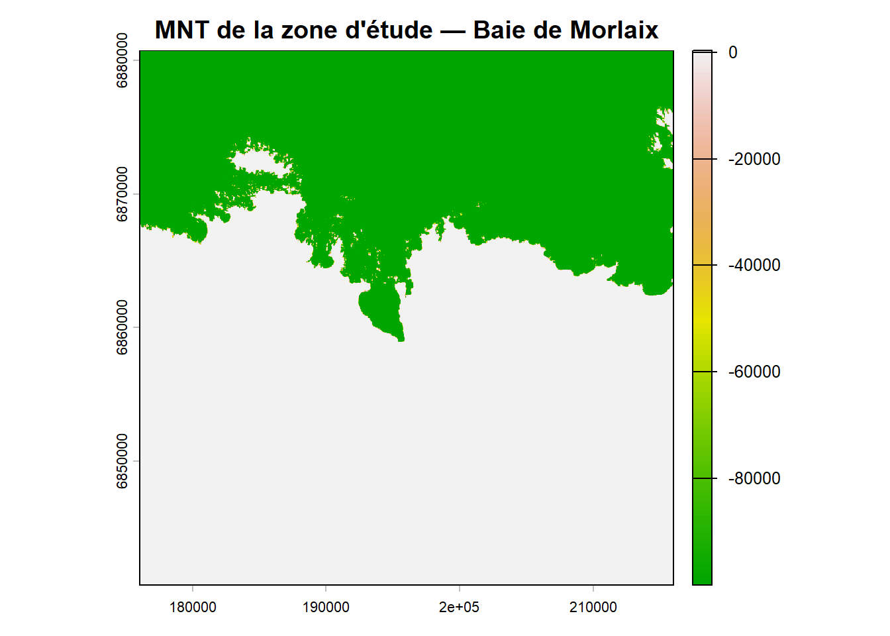
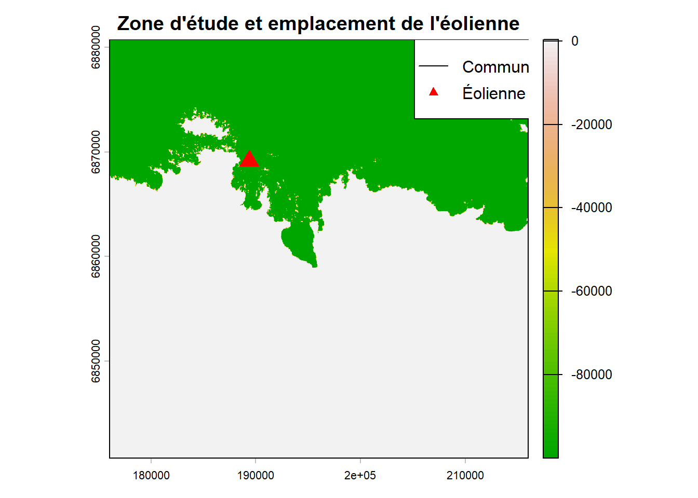
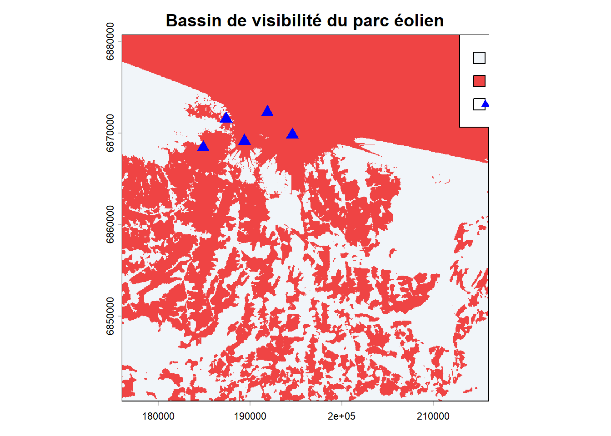

Le Modèle Numérique de Terrain (MNT) est issu de la BD ALTI de l’IGN. Chaque pixel contient l’altitude du terrain, ce qui permet de modéliser le relief des communes de Roscoff et Plougasnou.
Le MNT permet de calculer des “Viewsheds” (bassins de visibilité) : depuis quels endroits les éoliennes offshore seraient-elles visibles ?
C’est une donnée clé car :
point <- st_sfc(st_point(c(-3.85, 48.65)), crs = 4326)
zone <- st_buffer(st_transform(point, 2154), 20000)
mnt <- get_wms_raster(x = zone,
layer = "ELEVATION.ELEVATIONGRIDCOVERAGE.HIGHRES",
res = 25,
crs = 2154)## ...10...20...30...40...50...60...70...80...90...100 - done.plot(mnt,
main = "MNT de la zone d'étude — Baie de Morlaix",
col = terrain.colors(100))
communes <- get_wfs(x = zone,
layer = "ADMINEXPRESS-COG-CARTO.LATEST:commune")
zone_etude <- communes[communes$nom_officiel %in% c("Roscoff", "Plougasnou"), ]
eolienne_sfc <- st_sfc(st_point(c(-3.95, 48.72)), crs = 4326)
eolienne_proj <- st_transform(eolienne_sfc, 2154)
eolienne <- st_sf(geometry = eolienne_proj)
eolienne$hauteur <- 180
plot(mnt, main = "Zone d'étude et emplacement de l'éolienne",
col = terrain.colors(100))
plot(st_geometry(zone_etude), add = TRUE, border = "black", lwd = 2)
plot(st_geometry(eolienne), add = TRUE, col = "red", pch = 17, cex = 2)
legend("topright", legend = c("Communes", "Éolienne offshore"),
col = c("black", "red"), lty = c(1, NA), pch = c(NA, 17))
coords <- st_coordinates(eolienne)
visibilite <- viewshed(mnt,
loc = c(coords[1], coords[2]),
observer = 180,
target = 1.75)
plot(visibilite,
main = "Bassin de visibilité de l'éolienne",
col = c("#f1f5f9", "#ef4444"),
legend = FALSE)
plot(st_geometry(zone_etude), add = TRUE, border = "black", lwd = 2)
legend("topright", legend = c("Non visible", "Visible"),
fill = c("#f1f5f9", "#ef4444"))
roscoff <- zone_etude[zone_etude$nom_officiel == "Roscoff", ]
plougasnou <- zone_etude[zone_etude$nom_officiel == "Plougasnou", ]
roscoff_vect <- project(vect(roscoff), crs(visibilite))
plougasnou_vect <- project(vect(plougasnou), crs(visibilite))
visib_roscoff <- crop(visibilite, roscoff_vect, mask = TRUE)
visib_plougasnou <- crop(visibilite, plougasnou_vect, mask = TRUE)
calc_taux <- function(r) {
f <- freq(r)
visible <- f$count[f$value == 1]
total <- sum(f$count)
if (length(visible) == 0) return(0)
round((visible / total) * 100, 1)
}
taux_roscoff <- calc_taux(visib_roscoff)
taux_plougasnou <- calc_taux(visib_plougasnou)
resultats <- data.frame(
Commune = c("Roscoff", "Plougasnou"),
Taux_visibilite = c(taux_roscoff, taux_plougasnou)
)
knitr::kable(resultats,
col.names = c("Commune", "Taux de visibilité (%)"),
caption = "Pourcentage du territoire avec vue sur l'éolienne")| Commune | Taux de visibilité (%) |
|---|---|
| Roscoff | 0.7 |
| Plougasnou | 0.2 |
\[\text{Taux de visibilité} = \frac{\sum \text{Pixels visibles}}{\sum \text{Pixels totaux de la commune}} \times 100\]